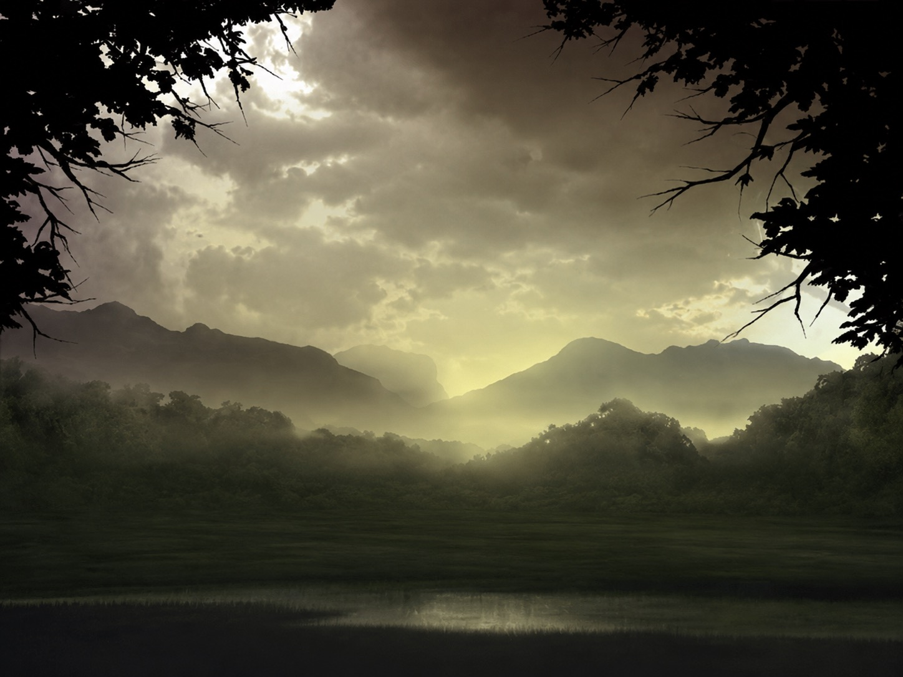
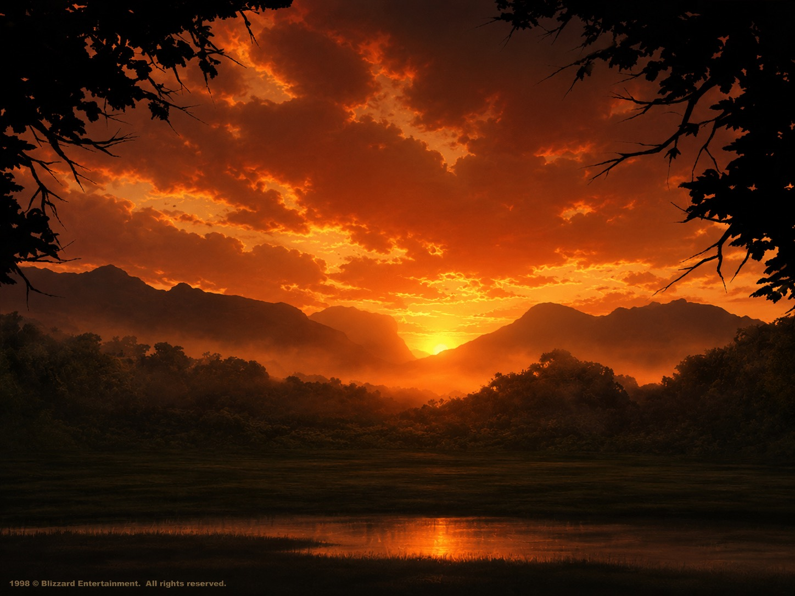
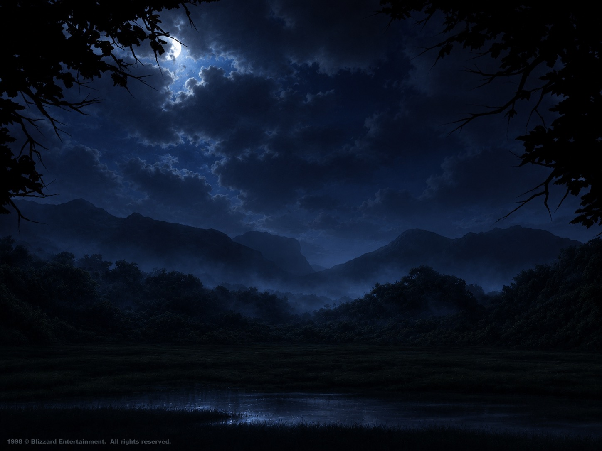

Day: Scout & Harvest
Explore freely, find resource pockets, and trickle minerals plus vespene from trees, rocks, crystals, bushes, and organic growth.
StarCraft co-op survival map
Survive five nights as Ghost commanders: mine minerals and gas, build lighted footholds, craft weapons and companion squads, then relocate before the jungle overruns you.
What you play
You are not building a giant base or ordering an army around. You are trying to keep one Ghost alive long enough to make the next decision: push into the dark for better resources, hold the line a little longer, or tear everything down and move before the jungle catches up.
Enemy color tells the squad how far the jungle has evolved.
How the map works
The loop, resources, enemies, and upgrades all feed into the same pressure cycle: prepare while you can, survive when the jungle pushes back, then move before your safe pocket becomes a trap.
Core loop
Each day and night lasts 22 minutes. Days are for scouting and preparation. Nights are for holding your nerve.



Explore freely, find resource pockets, and trickle minerals plus vespene from trees, rocks, crystals, bushes, and organic growth.
Craft one active weapon, upgrade your Ghost, share minerals, and prepare the squad for the next push.
Place lights, walls, turrets, and regeneration stations. Lights brighten the area and block nearby spawns.
Zerg pressure spikes. Ghost control, teamwork, weapon choice, and light placement matter most.
Mobs advance Black → Brown → Orange → Red. Time drives evolution; kills and exploration can accelerate it.
Break down structures, relocate, recover from losses, and repeat until the squad survives five nights.
Scavenging
Harvesting trickles minerals and vespene gas over time, with each resource type leaning toward different yields.
Zerg threat ladder
Zerg units are the base mob families. Each line evolves automatically as the run progresses. Enemy name and color tell players the threat level: Black → Brown → Orange → Red.
Commando progression
Each player grows independently. You keep unlocks and upgrades through death, but bad fights still cost resources and structures.
EPS system map
`main.eps` stays orchestration-only: it initializes every system, then each frame updates the survival loop, resource economy, critter hunts, combat, structures, mobs, and victory state.
Loading source index…